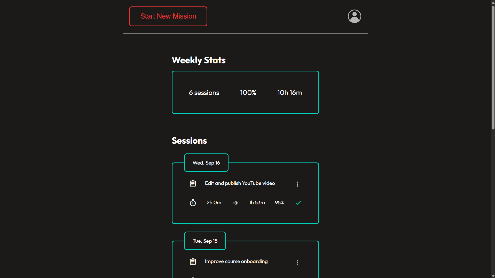

v0.1 — Core MVP
Plan → Focus → Review.
I build products end to end, from the problem and product decisions to UI, frontend, backend, databases, authentication, debugging, and deployment.
Helps people be consistent with deep work by making execution visible and rewarding. I built it end to end to solve my own struggle with consistently executing on my plans.

The idea was to build a product that tracks deep work time and makes consistency visible in a way that rewards the user for continuing. It also became a way for me to learn how to build software products that help people improve.
I built the first frontend MVP in two weeks using HTML, CSS, and JavaScript. At that point, persistence was only a local JSON file.
After using it myself for about a month, I wanted multiple users to be able to use it. I did not know how to build account systems or store multiple users' data, but instead of learning backend development separately, I learned the concepts I needed and immediately applied them to ExecutionOS.
Once the app supported multiple users, the core experience didn't meet my minimum quality bar. I learned enough Figma, UI design, and prototyping to redesign the screens, then translated those designs directly into the shipped product.


Plan → Focus → Review.
Added backend persistence and visibility into completed work.
Accounts, user-owned sessions, deletion, and completed core UI.
Redesigned and polished the full core experience for production.
JWT authentication · SQLAlchemy · Netlify · Render
Local persistence was enough at first, but to support multiple users, I replaced the local JSON storage with a SQL database.
Render's local filesystem was going to reset the database content on redeploys. To avoid losing data, I decided to separate it from the backend deployment.
I chose a short-lived access token plus a long-lived refresh token. The access token stays in memory, the refresh token lives in an HttpOnly cookie, and the client refreshes access transparently when needed. A token-version field prevents future refreshes after logout.
I identified that trusting a user_id provided by a client would let them request
another user's data. I then moved identity into verified JWT claims instead.
The timer stopped counting reliably when the tab was inactive. I moved from incrementing seconds to calculating elapsed time from timestamps, while separately tracking and subtracting paused time.
I intentionally kept the core flow minimal instead of using a timer ↔ dashboard loop. Each screen has one clear purpose so the user has fewer distractions and always know what to do now.
Users shouldn't be able to modify the time of a finished session. The restriction protects their accountability to themselves.
The user defines intended work before starting. Planning happens first, so the focus session can be about execution instead of repeatedly deciding what to do.
I’m deeply interested in self improvement, fitness, and technology. I worked at a gym for months to buy the computer I now use to build ExecutionOS, a product born from my own struggle with consistency. I love pushing myself to learn and grow, then using that to build things that help other people grow too.